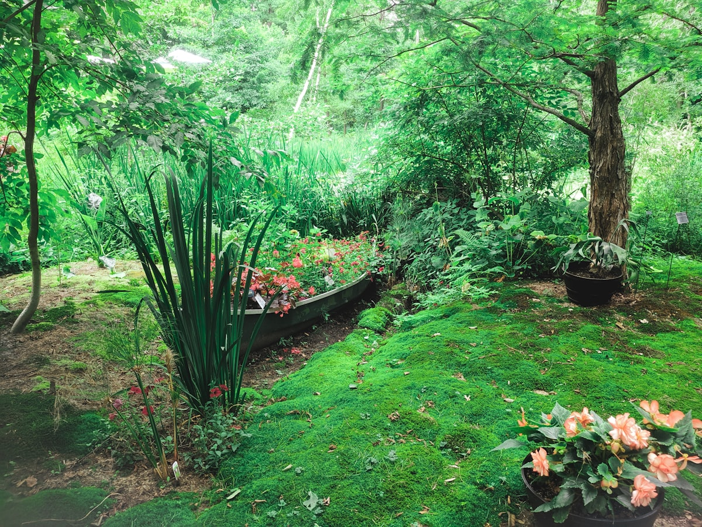
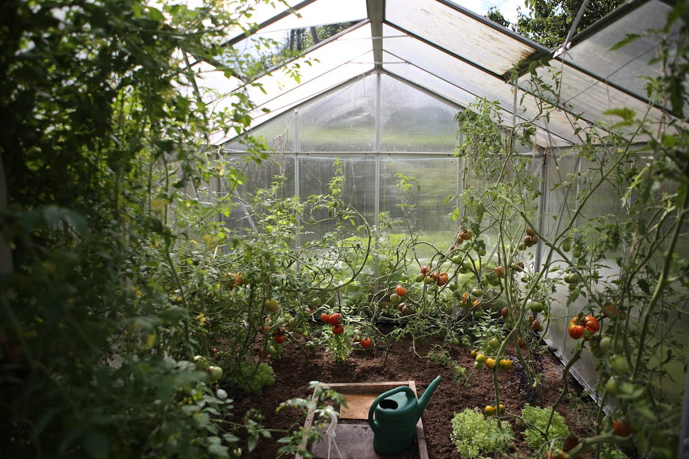

Front Bed Revival
Removed invasive weeds, added compost and fresh mulch, then replanted with drought-tolerant perennials.
Residential Gardening Care
Thoughtful, seasonal garden care for homeowners who want beautiful outdoor spaces without the stress.
Seasonal cleanup, edging, mulching, and plant health checks to keep your beds tidy and thriving.
Careful pruning for shrubs, roses, and ornamentals to support healthy growth and clean structure.
Custom potted arrangements for patios and entryways using low-maintenance, seasonally appropriate plants.
Weeding, deadheading, watering checks, and light detail work to keep your yard guest-ready.
“Valentina transformed our front yard from overgrown to picture-perfect in just two visits.”
“Reliable, kind, and incredibly knowledgeable. Our roses have never looked better.”
“She helped us choose plants that actually survive in our sunny backyard. Huge difference.”

Removed invasive weeds, added compost and fresh mulch, then replanted with drought-tolerant perennials.

Shaped shrubs for healthier growth and improved light flow while preserving seasonal blooms.

Built a low-maintenance container plan with herbs, trailing greens, and color accents for year-round appeal.
Ready to freshen up your garden? Reach out for a free estimate.